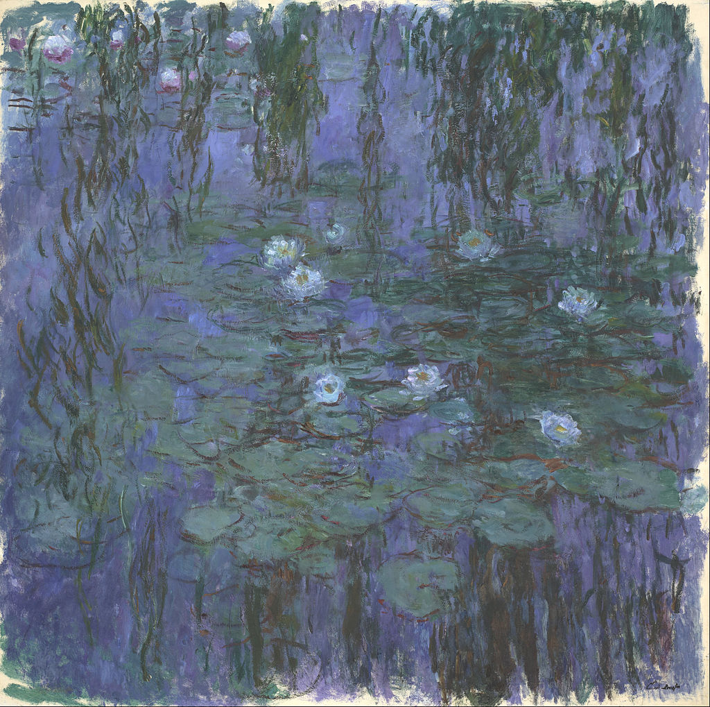

<head>
<meta charset="UTF-8" />
<meta name="keywords" content="drawing, painting" />
<meta name="description" content="drawings by Sunjy" />
<title>Sunjy</title>
<link rel="shortcut icon" type="image/x-icon" href="../../mImages/mCommon/favicon.ico" media="screen" />
<link rel="stylesheet" type="text/css" href="../../mCsses/mCommon/mCssA.css" />
<link rel="stylesheet" type="text/css" href="../../mCsses/mCommon/mCssB.css" />
<link rel="stylesheet" type="text/css" href="../../mCsses/mCommon/mCssC.css" />
<link rel="stylesheet" type="text/css" href="../../mCsses/mCommon/mCssD.css" />
<link rel="stylesheet" type="text/css" href="../../mCsses/mContent/mCssA.css" />
<link rel="stylesheet" type="text/css" href="../../mCsses/mContent/mCssB.css" />
<link rel="stylesheet" type="text/css" href="../../mCsses/mContent/mCssC.css" />
<link rel="stylesheet" type="text/css" href="../../mCsses/mContent/mCssD.css" />
</head>
<script type="text/javascript" src="../../mScripts/mContent/mContentAA.js" /></script>
<script type="text/javascript" src="../../mScripts/mContent/mContentAB.js" /></script>
<script type="text/javascript" src="../../mScripts/mContent/mContentAC.js" /></script>
<script type="text/javascript" src="../../mScripts/mContent/mContentAD.js" /></script>
<script type="text/javascript"></script> 
<script type="text/javascript">
document.write('<div class="mImgAbsolute"></div>');
/*
document.write('<p class="mFontSizeBColor" />From a white paper...</p>');
document.write('<table class="center"><tr><td>');
document.write('');
document.write('</td></tr></table>');
*/
</script>


<script type="text/javascript">
document.write('<p class="mFontSizeBColor" />Blue Water Lilies</p>');
document.write('<p class="mFontSizeSColor" />By Claude Monet. “Blue Water Lilies” depicts his water-lily pond, from his garden in Giverny. Monet grew water lilies in his water garden, and from the 1910s until he died in 1926, the garden and its pond became the artist’s main inspiration. Monet claimed:<br><br>“Apart from painting and gardening, I am good for nothing. My greatest masterpiece is my garden.”<br><br>In this version of “Water Lilies,” Monet focused on a small area of the pond, to the exclusion of sky or boundaries. The square canvas reinforces the neutrality of the composition and the impression of a shapeless surface.  Monet’s brushstrokes are free and detached in an imaginative and beautiful abstraction.<br><br>Claude Monet painted nearly 250 paintings in his series of “Water Lilies.” Monet painted many of his later works while suffering from cataracts.</p>');
document.write('<table class="center" /><tr><td>');
document.write('<br>“Apart from painting and gardening, I am good for nothing. My greatest masterpiece is my garden.”<br><br>In this version of “Water Lilies,” Monet focused on a small area of the pond, to the exclusion of sky or boundaries. The square canvas reinforces the neutrality of the composition and the impression of a shapeless surface.  Monet’s brushstrokes are free and detached in an imaginative and beautiful abstraction.<br><br>Claude Monet painted nearly 250 paintings in his series of “Water Lilies.” Monet painted many of his later works while suffering from cataracts." />');
document.write('</td></tr></table>');
</script>


